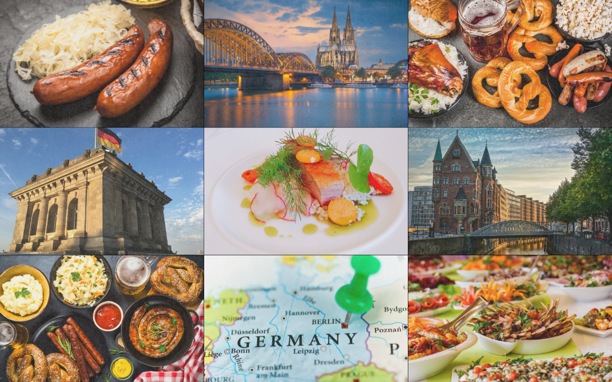

GERMANY

Outdoor Activities
Germany provides ample opportunities for outdoor adventures:
- Hiking and Cycling: The Bavarian Alps, Harz Mountains, and numerous national parks offer extensive trails.
- Water Activities: The Baltic and North Sea coasts are popular for sailing, windsurfing, and beach activities.
- Winter Sports: Skiing and snowboarding in the Bavarian Alps and the Black Forest.
Accommodation
Germany offers a range of accommodation options:
- Luxury Hotels: Many housed in historic buildings with modern amenities.
- Guesthouses and Bed & Breakfasts: Providing a more intimate and local experience.
- Budget Options: Hostels, budget hotels, and camping sites.
Practical Information
- Language: German is the official language, but English is widely spoken in tourist areas.
- Currency: Euro (€).
- Transportation: Efficient public transportation with extensive train networks (Deutsche Bahn), buses, and local transit systems.
Travel Tips
- Best Time to Visit: Spring (April to June) and Autumn (September to October) for pleasant weather and cultural events.
- Safety: Germany is generally very safe for travelers, but it’s always good to stay aware of your surroundings.
- Etiquette: Be punctual, respect local customs, and greet people with a handshake.